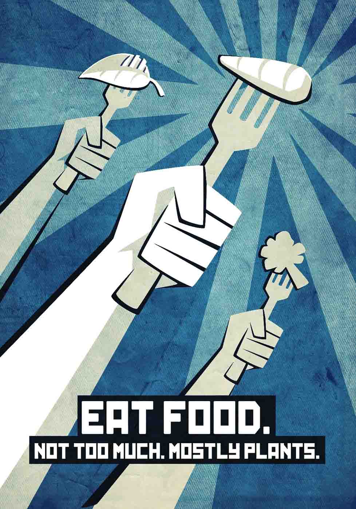

Michael Pollan got it right: real food is better for humans.
The outer aisles of the supermarket are where the healthiest foods are: greens, fruits, poultry, nuts, grains, and diary. Fill up the cart.
Meals at home and a brownbag lunch at work are more nutritious than eating out.
Families who eat the evening meal together eat healthier.
